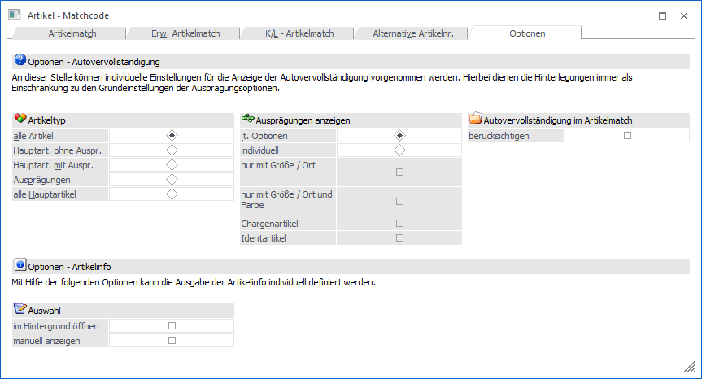
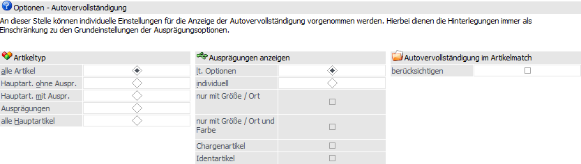
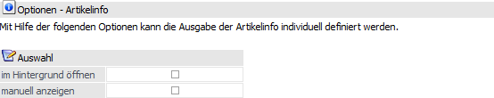

In diesem Register können benutzerspezifischen Einstellungen für die Autovervollständigung und die Artikelinfo-Anzeige (Button "Artikelinfo") definiert werden.
Hinweis
Die Speicherung der Einstellungen erfolgt durch Anwahl des Buttons "Speichern", welcher Anstatt des Buttons "Anzeigen" zur Verfügung steht.

Autovervollständigung

In dem Bereich "Optionen - Autovervollständigung" können individuelle Einstellungen für die Anzeige der Autovervollständigung vorgenommen werden. Hierbei dienen die Hinterlegungen immer als Einschränkung zu den Grundeinstellungen der Ausprägungsoptionen (WinLine FAKT - Stammdaten - Ausprägungen).
Achtung
Durch gegensätzlich Einstellung (Ausprägungsoptionen <-> Artikel - Matchcode Optionen) kann es passierten, dass keine Artikel in der Autovervollständigung angezeigt werden!
Beispiel
Wenn in den Ausprägungsoptionen (bei allen Ausprägungstypen) die Checkbox für "Hauptartikel" deaktiviert wurde und in den Artikel - Matchcode Optionen definiert wird, dass nur "Hauptartikel mit Ausprägungen" angezeigt werden sollen, dann werden in der Autovervollständigung keine Artikel angezeigt.
Ø Artikeltyp
An dieser Stelle kann definiert werden, welche Artikeltypen in der Autovervollständigung angezeigt werden sollen. Hierfür kann eine der folgenden Optionen gewählt werden:
ü alle
ü Hauptartikel ohne Ausprägungen
ü Hauptartikel mit Ausprägungen
ü Ausprägungen
ü alle Hauptartikel
Ø Ausprägungen anzeigen
Bei den Artikeltypen "Alle" und "Ausprägungen" kann zusätzlich die Anzeige der Ausprägungen in der Autovervollständigung verfeinert werden. Dabei stehen folgende Optionen zur Auswahl:
ü lt. Optionen
Die Anzeige der
Ausprägungen wird gemäß den Einstellungen der Ausprägungsoptionen
vorgenommen.
ü individuell
Die Anzeige der
Ausprägungen kann individuell definiert werden, wobei die Einstellungen der
Ausprägungsoptionen nur verfeinert werden. Hierfür stehen folgende Varianten zur
Verfügung:
ü Nur mit Ausprägung 1
ü Nur mit Ausprägungen 1 und Ausprägung 2
ü Chargenartikel
ü Identartikel
Ø Autovervollständigung im Artikelmatch berücksichtigen
Durch Aktivierung dieser Option werden die (maximal) 5 zusätzlichen Spalten der Autovervollständigung von Artikeln (WinLine START - Parameter - Autovervollständigung) im Register "Artikelmatch" zur Verfügung gestellt.
Hinweis
Folgende Punkte sind bei Nutzung der Option zu beachten:
ü Die zusätzlichen Spalten werden nicht direkt dargestellt, sondern müssen über die rechte Maustaste (Funktion "Spalten anzeigen/verstecken)" eingebunden werden.
ü Die Daten der Lagerwerte, welche ebenfalls über die Autovervollständigung angezeigt werden können, stehen im Register "Artikelmatch" nicht zur Verfügung, da es dort die Informationen bereits gibt.
ü Die zusätzlichen Spalten stehen ausschließlich im aktuellsten Wirtschaftsjahr des Mandanten zur Verfügung.
Optionen - Artikelinfo

Ø im Hintergrund öffnen
Mit dieser Option kann definiert werden, dass nach dem Anzeigen der Artikelinfo der Fokus wieder auf die Suchergebnistabelle des Matchcodes gesetzt wird.
Ø manuell anzeigen
Wenn diese Option aktiviert ist, dann funktioniert der Button "Artikelinfo" nicht mehr als Ein-/Ausschaltknopf für die automatische Anzeige, sondern wie der Info-Button in den meisten anderen Fenstern. D.h. beim Druck auf den Button wird die Info geöffnet und bleibt solange am Bildschirm, bis diese geschlossen oder der Matchcode beendet wird.